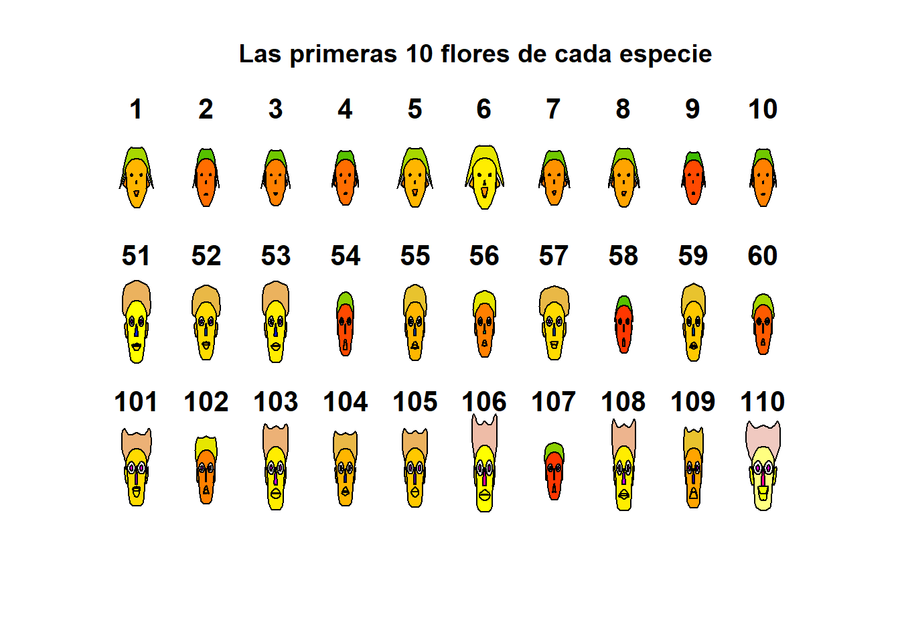
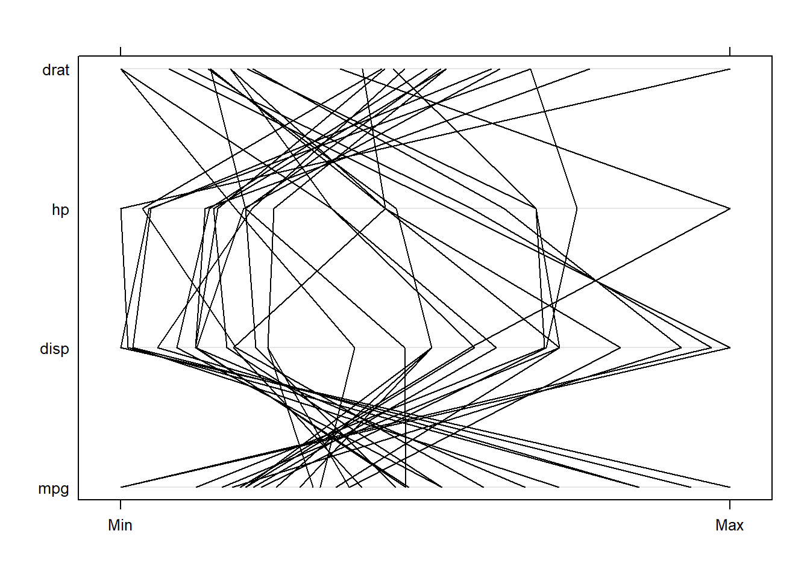

Sección 7 Apéndices
7.2 Git + Github
- Conectar R con Git y Github: Link
7.3 Correlaciones y distancias
Con los siguientes dos paquetes se pueden realizar los plots de las matrices de correlaciones y distancias.
7.4 Plots Multivariados
7.4.1 Caritas de Chernoff
Instala el paquete aplpack y carga la base de datos iris.
faces(iris[c(1,51,101),1:4],
nrow.plot = 1,
ncol.plot = 3,
main = "La primer flor de cada especie", print.info = TRUE)
## effect of variables:
## modified item Var
## "height of face " "Sepal.Length"
## "width of face " "Sepal.Width"
## "structure of face" "Petal.Length"
## "height of mouth " "Petal.Width"
## "width of mouth " "Sepal.Length"
## "smiling " "Sepal.Width"
## "height of eyes " "Petal.Length"
## "width of eyes " "Petal.Width"
## "height of hair " "Sepal.Length"
## "width of hair " "Sepal.Width"
## "style of hair " "Petal.Length"
## "height of nose " "Petal.Width"
## "width of nose " "Sepal.Length"
## "width of ear " "Sepal.Width"
## "height of ear " "Petal.Length"Para los elementos de color de las caras, los colores son encontrados al promediar los conjuntos de variables: (7,8)-eyes:iris, (1,2,3)-lips, (14,15)-ears, (12,13)-nose, (9,10,11)-hair, (1,2)-face (From ?faces).
Grafiquemos las primeras 10 flores de cada especie:
faces(iris[c(1:10,51:60,101:110),1:4],
nrow.plot = 3,
ncol.plot = 10,
main = "Las primeras 10 flores de cada especie", print.info = FALSE)
Ahora grafiquemos las primeras 5:
faces(iris[c(1:5,51:55,101:105),1:4],
nrow.plot = 3,
ncol.plot = 5,
main = "Las primeras 5 flores de cada especie", print.info = FALSE)
Aquí podemos notar que la carita 54 es muy diferente a las demás de su especie- La carita 102 se parece más a la de la especie 55 que a las suyas. El pelo de la primera especie es muy diferente a los de las otras especies.
Es muy “fácil” hacer grupos a ojo.
## Sepal.Length Sepal.Width Petal.Length Petal.Width
## 7.9 4.4 6.9 2.5## Sepal.Length Sepal.Width Petal.Length Petal.Width
## 4.3 2.0 1.0 0.1chico<-c(4,2,1,.05) # Valores más chicos de las 4 variables.
grande<-c(8,5,7,3) # Valores más grandes de las 4 variables.
faces(rbind(iris[c(1:10,51:60,101:110),1:4],chico,grande), nrow.plot=5, ncol.plot=10,main="Primeros 10 de cada especie + chico + grande" )## effect of variables:
## modified item Var
## "height of face " "Sepal.Length"
## "width of face " "Sepal.Width"
## "structure of face" "Petal.Length"
## "height of mouth " "Petal.Width"
## "width of mouth " "Sepal.Length"
## "smiling " "Sepal.Width"
## "height of eyes " "Petal.Length"
## "width of eyes " "Petal.Width"
## "height of hair " "Sepal.Length"
## "width of hair " "Sepal.Width"
## "style of hair " "Petal.Length"
## "height of nose " "Petal.Width"
## "width of nose " "Sepal.Length"
## "width of ear " "Sepal.Width"
## "height of ear " "Petal.Length"Ejercicio: Explora el siguiente plot, ¿porqué sonrisas?.
faces(cbind(iris[1:15,1:4],rep(1:5,rep(3,1)), rep(c(2,4,6),rep(5,3))),
nrow.plot = 3,
ncol.plot = 5,
main = "¿Sonrisas?", print.info = FALSE)Con las caritas de Chernoff es mejor la representación o visualización si se tienen pocos datos y se pueden representar hasta 15 variables.
7.4.2 Curvas de Andrew
Instala y carga el paquete Andrews.
## See the package vignette with `vignette("andrews")`par(mfrow=c(2,2))
andrews(iris, type = 1, clr = 5, ymax = 3, main = "Curva tipo 1")
andrews(iris, type = 2, clr = 5, ymax = 3, main = "Curva tipo 2")
andrews(iris, type = 3, clr = 5, ymax = 3, main = "Curva tipo 3")
andrews(iris, type = 4, clr = 5, ymax = 3, main = "Curva tipo 4")Podemos observar que las especies de color rojo se separan más de las otras dos en casi todos los casos. Hay intersecciones en las curvas.
Ejercicio: Carga las bases de datos mtcars y ChickWeight y explora sus curvas de Andrews.
7.4.3 Gráficos de Paralelas
library(lattice)
data(mtcars)
parallelplot(~mtcars|mtcars$cyl, main="Plot de paralelas por Cilindros")
En el eje Y podemos ver todas las variables. Los cruces reflejan correlaciones negativas entre las variables.
parallelplot(~mtcars[,c(1,6,7,3,4,5)],col=as.numeric(mtcars$cyl)-3,main="Plot de paralelas por Cilindros" )En este plot se pueden ver los grupos por colores, los que pesan poco tienen un mayor rendimiento. Cuando no hay cruces reflejan correlación positiva.

Si calculamos la matriz de correlaciones, podemos ver que las variables con correlación negativa se reflejan aqui también.
## mpg disp hp drat
## mpg 1.00 -0.85 -0.78 0.68
## disp -0.85 1.00 0.79 -0.71
## hp -0.78 0.79 1.00 -0.45
## drat 0.68 -0.71 -0.45 1.00Estos gráficos también dependen del orden de las variables.
Ejercicio: realiza dos plots de paralelas de la base de datos iris, uno divido por especie y otro donde el color vaya a la variable especie. ¿Qué puedes decir al respecto?
7.4.4 Estrellas
palette(rainbow(12, s = 0.6, v = 0.75))
stars(mtcars[, 1:7], len = 0.8, key.loc = c(12, 1.5),
main = "Motor Trend Cars", draw.segments = TRUE)También se puede realizar un plot de radar.
stars(mtcars[, 1:7], locations = c(0, 0), radius = FALSE,
key.loc = c(0, 0), main = "Motor Trend Cars", lty = 2)Ejercicio: Crea los plots de estrellas de la base de datos iris. ¿Qué puedes inferir de ellos?